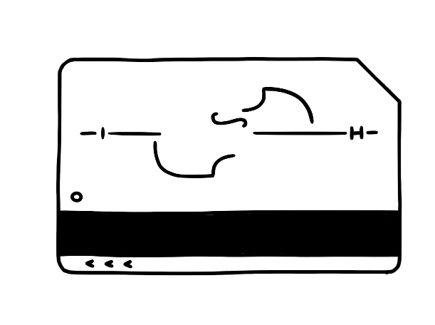
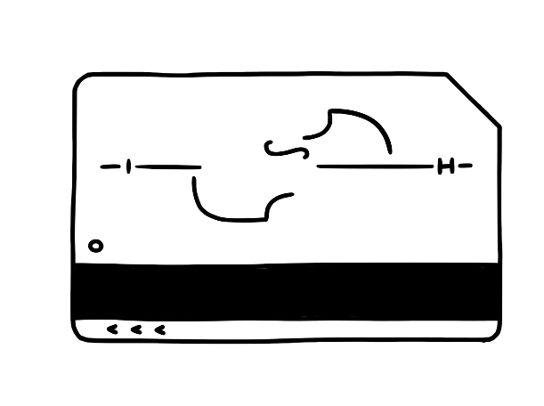

Welcome to Music Never Sleeps NYC!
Announcing another 24-hour livestream, “Music Never Sleeps Dresden Music Festival”, in collaboration with Dresden Music Festival. Join us May 16 beginning at 12:00PM New York / 5:00PM London / 6:00pm Dresden!
The Dresden Music Festival turns the internet into a concert hall this month. Cellist Jan Vogler, Artistic Director of the Festival, invites audiences in Dresden and all over the world to join him and co-host singer Ute Lemper on May 16 beginning at 12:00PM EDT / 5:00PM GMT / 6 pm CET for Music Never Sleeps DMF, a 24-Hour Livestream Festival. The event will feature over 50 artists including some of the most important classical, jazz and world music stars.
Music Never Sleeps NYC announces new radio series "Where the Music Never Sleeps with Jan Vogler" in collaboration with WQXR.
The success of Music Never Sleeps NYC has resulted in a special radio series "Where the Music Never Sleeps with Jan Vogler" to be aired on New York's classical music station WQXR 105.9 FM and WQXR.org. It will debut on Saturday, May 9, 2020 at 7:00PM EDT and air every Saturday thereafter during the month of May. The series will feature recordings made in homes and apartments of some of New York's most well-known artists as well as rising stars including pianist Emanuel Ax, cellist Zlatomir Fung, composer Nico Muhly, quartet Sandbox Percussion, and Time for Three
Join us on March 27, 2020 at 6:00PM EDT for Music Never Sleeps NYC, our 24 hour artist-inspired program. Tune in here, or on our Facebook or Youtube livestreams!